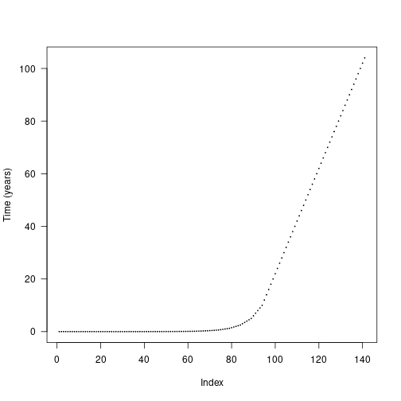
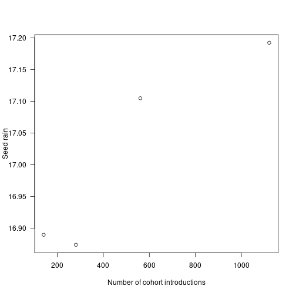
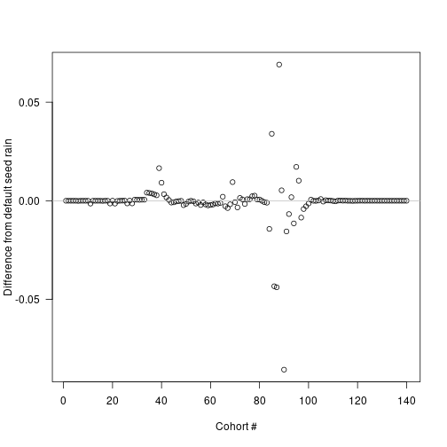
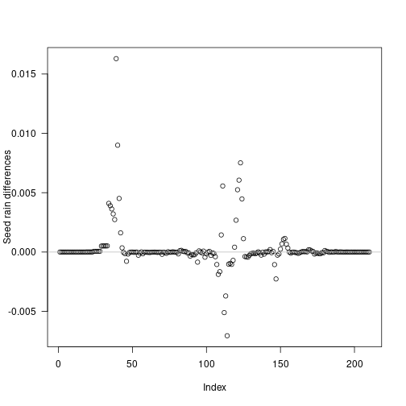

Cohort spacing algorithm
Rich FitzJohn
Daniel Falster
2016
Source:vignettes/cohort_spacing.Rmd
cohort_spacing.RmdBackground
As described in the demography vignette, the spacing of cohorts can affect the accuracy of integration over the size-density distribution. plant uses an adaptive algorithm to build an appropriately spaced cohort schedule with the desired accuracy at every time point, using as few cohorts as possible.
The build_schedule function takes an initial vector of introduction times and considers for each cohort whether removing that cohort causes the error introduced when integrating two specified functions over the size-density distribution to jump over the allowable error threshold schedule_eps. This calculation is repeated for every time step in the development of the patch. A new cohort is introduced immediately prior to any cohort failing these tests. The dynamics of the patch are then simulated again and the process is repeated, until all integrations at all time points have an error below the tolerable limit schedule_eps. Decreasing schedule_eps demands higher accuracy from the solver, and thus increases the number of cohorts being introduced. Note that we are assessing whether removing an existing cohort causes the error to jump above the threshold limit, and using this to decide whether an extra cohort – in addition to the one used in the test – should be introduced. Thus, the actual error is likely to be lower than, but at most equal to, schedule_eps.
This vignette shows some details of cohort splitting, most of which happens automatically. It’s probably not very interesting to most people, only those interested in knowing how the SCM technique works in detail. It also uses a lot of non-exported, non-documented functions from plant so you’ll see a lot of plant::: prefixes.
Cohort introduction times
The default cohort introduction times are designed to concentrate cohort introductions onto earlier times, based on empirical patterns of cohort refining:
library(plant)
library(parallel)
n_cores = max(1, detectCores() - 1)
params <- scm_base_parameters("FF16")
patch <- expand_parameters(trait_matrix(0.0825, "lma"), params, mutant = FALSE)
patch$seed_rain <- 20
times_default <- patch$cohort_schedule_times[[1]]
plot(times_default, cex=.2, pch=19, ylab="Time (years)", las=1)
The actual differences are stepped in order to increase the chance that cohorts from different species will be introduced at the same time and reduce the total amount of work being done.

Seed rain
We can assess the impact of cohort spacing on integration error by examining the cumulative propagule output (e.g. seed rain) of a patch.
Increasing the number of cohorts is expected to increase integration accuracy at the expense of more computational effort. We can create more refined schedules by interleaving points into the existing schedule:
interleave <- function(x) {
n <- length(x)
xp <- c(x[-n] + diff(x) / 2, NA)
c(rbind(x, xp))[- 2 * n]
}
times_2x <- interleave(times_default)
times_4x <- interleave(times_2x)
times_8x <- interleave(times_4x)
plot(times_default, xlab = "Cohort #", ylab="Time (years)",
xlim = c(1, length(times_8x)), las=1, pch = 19, cex=.2,)
points(times_2x, pch=19, cex=.2, las=1, col = "blue")
points(times_4x, pch=19, cex=.2, las=1, col = "red")
points(times_8x, pch=19, cex=.2, las=1, col = "black") Each schedule runs for the same duration, but
Each schedule runs for the same duration, but times_high has 4x as many cohorts. Running a patch with each cohort schedule allows us to compare the propagule outputs:
run_with_times <- function(patch, t) {
patch$cohort_schedule_times[[1]] <- t
start <- Sys.time()
seed_rain <- run_scm(patch)$seed_rains
print(paste("Time to solve:", round(Sys.time() - start, 2)))
return(seed_rain)
}
seed_rain_default <- run_with_times(patch, times_default)## [1] "Time to solve: 3.55"
seed_rain_2x <- run_with_times(patch, times_2x)## [1] "Time to solve: 7.54"
seed_rain_4x <- run_with_times(patch, times_4x)## [1] "Time to solve: 24.06"
seed_rain_8x <- run_with_times(patch, times_8x)## [1] "Time to solve: 1.26"
cohort_range <- c(length(times_default), length(times_2x),
length(times_4x), length(times_8x))
seed_rain_range <- c(seed_rain_default, seed_rain_2x,
seed_rain_4x, seed_rain_8x)Quadrupling the number of cohorts results in nearly a 6x increase in runtime, eight times the cohorts takes roughly 26x longer.
plot(x = cohort_range, y = seed_rain_range,
xlab="Number of cohort introductions", ylab="Seed rain", las=1) Seed rain increases as cohorts are introduced more finely, though at a saturating rate, meaning there are diminishing returns in accuracy for additional cohorts.
The differences in seed rain are not actually that striking (perhaps 2%) but the introduced variation creates instabilities of sufficient concern.
Individual seed rain contributions
Where is the fitness difference driving change in seed rain coming from?
Consider adding a single additional cohort at one of the points along the first vector of times times_default and computing the output seed rain:
insert_time <- function(i, x) {
j <- seq_len(i)
c(x[j], (x[i] + x[i+1])/2, x[-j])
}
run_with_insert <- function(i, patch, t) {
run_with_times(patch, insert_time(i, t))
}
insert_positions <- seq_len(length(times_default) - 1)
seed_rains <- unlist(mclapply(insert_positions, run_with_insert,
patch, times_default, mc.cores = n_cores))
seed_rain_differences <- seed_rains - seed_rain_default
plot(insert_positions, seed_rain_differences,
xlab="Cohort #", ylab="Difference from default seed rain", las=1)
abline(h=0, col="grey")
The biggest deviations in output seed rain come about half way through the schedule, though because of the compression of early times this occurs fairly early in patch development:
times_interpolated <- (times_default[-1L] +
times_default[-length(times_default)]) / 2
plot(times_interpolated, seed_rain_differences,
xlab="Time (years)", ylab="Difference from default seed rain", las=1)
abline(h=0, col="grey") Now look at the contribution of different cohorts to the overall patch output (log scaled for clarity):
Now look at the contribution of different cohorts to the overall patch output (log scaled for clarity):
default <- run_scm(patch)
# remove first cohort to avoid log(0)
plot(times_default[-1], default$seed_rain_cohort(1)[-1], log = "y",
xlab="Time (years)", ylab="Seed rain (log scale)")
top_5 <- order(abs(seed_rain_differences), decreasing=TRUE)[1:5]
abline(v=times_interpolated[top_5], col=c("red", rep("grey", 4)))
In this case almost all the contribution comes from early cohorts (this is essentially a single-age stand of pioneers).
Overlaid on this are the five cohorts where extra refinement (i.e. inserting an additional cohort) causes the largest change in overall seed rain output (biggest difference in red).
The difference is not coming from seed rain contributions of those cohorts, which is basically zero, though it is higher than the surrounding cohorts.
Individual competitive impacts
If the inserted cohorts are not altering seed rain through individual contributions, they may be altering the output of neighbouring cohorts through comepttive interactions.
Here we investigate the differences in patch light environment after introducing the single cohort driving the greatest difference in seed output identified above.
First we run patches with and without the extra cohort, collecting the complete set of patch conditions at each timestep.
collect_with_times <- function(patch, t) {
patch$cohort_schedule_times[[1]] <- t
result <- run_scm_collect(patch)
return(result)
}
insert_position <- top_5[1]
times_insert <- insert_time(insert_position, times_default)
results_default <- collect_with_times(patch, times_default)
results_insert <- collect_with_times(patch, times_insert)In order to make a direct comparison, we need to interpolate the light environment over a common set of heights at each time step.
We reconstruct the light environment spline for both runs, and compute canopy openness in both:
interpolated_environment <- function(env, heights) {
# intialise new spline with existing values
spline <- plant:::Interpolator()
spline$init(env[, 1], env[, 2])
# subset to valid heights in patch
patch_heights <- heights < spline$max
# evaluate over list of heights and zero
y <- spline$eval(heights)
y[!patch_heights] = 0
return(y)
}
n = length(results_default$time)
max_height <- max(results_default$env[[n]][, 1],
results_insert$env[[n+1]][, 1])
heights <- seq(0, max_height, length.out=201)
canopy_default <- sapply(results_default$env, interpolated_environment, heights)
canopy_insert <- sapply(results_insert$env, interpolated_environment, heights)
canopy_difference <- t(canopy_insert[, -(insert_position + 1)] - canopy_default)
canopy_difference[abs(canopy_difference) < 1e-10] <- NATaking the difference between light environments at each height and timestep, the resulting image plot is blue in regions where the refined light environment, with the additional cohort is lighter (higher canopy openness) and red in regions where the the light environment is darker with the additional cohort.
# ColorBrewer's RdBu palette
cols <- c("#B2182B", "#D6604D", "#F4A582", "#FDDBC7",
"#D1E5F0", "#92C5DE", "#4393C3", "#2166AC")
pal <- colorRampPalette(cols)(20)
image(results_default$time, heights, canopy_difference,
xlab="Time (years)", ylab="Height (m)", las=1, col=pal) Canopy openness is 9.68% lower for ~7 m tall cohorts at year 25. This increased competitive intensity may be driving differences in seed rain.
Canopy openness is 9.68% lower for ~7 m tall cohorts at year 25. This increased competitive intensity may be driving differences in seed rain.
Monitoring integration accuracy
The internal function plant:::run_scm_error runs the SCM and computes errors as the integration proceeds.
We integrate two different functions over the size-density distribution, area_leaf_error and seed_rain_error, and assess how much removing the focal cohort increases the error in these two integrations.
area_leaf_error, determines how much the removal of the focal cohort increases the error in the estimate of the total leaf area in the patch.
Similarly, seed_rain_error, determines how much the removal of the focal cohort increases the error in the estimate of the total seed production from the patch. The relative error in each integration is then calculated using the local_error_integration function.
We’ve shown that large differences manifest in canopy openness. Here we use plant:::run_scm_error to assess the integration error of the leaf area for all cohorts.
The black line indicates the cohort identified as problematic above.
patch_error <- plant:::run_scm_error(patch)
image(times_default, times_default, patch_error$err$lai[[1]],
xlab="Patch age (years)", ylab="Introduction time (years)", las=1)
abline(h=times_default[top_5[1]])
plant:::run_scm_error is used by the build_schedule function to find an appropriately refined cohort spacing algorithm that minimises both integration errors.
patch_refined <- build_schedule(patch)
seed_rain_refined <- attr(patch_refined, "seed_rain_out")We can see the impact of this refinement by repeating our earlier analysis and inserting a new cohort at each timestep and extracting the seed rain:
times_refined <- patch_refined$cohort_schedule_times[[1]]
insert_positions <- seq_len(length(times_refined) - 1)
seed_rains_refined <- unlist(mclapply(insert_positions, run_with_insert,
patch_refined, times_refined,
mc.cores = n_cores))
refined_differences = seed_rains_refined - seed_rain_refined
plot(insert_positions, refined_differences,
xlab="Index", ylab="Seed rain differences", las=1)
abline(h=0, col="grey")
Some cohorts still introduce variation, however errors in seed rain are reduced by an order of magnitude, and are even smaller if considering relative error:
plot(insert_positions, seed_rains_refined / seed_rain_refined - 1,
xlab="Index", ylab="Relative seed rain differences", las=1) The refined cohort introduction schedule results in a seed rain near the saturating value identified in [# Seed rain] but with 211 cohorts rather than the 1121 cohorts used in naive interpolation.
The refined cohort introduction schedule results in a seed rain near the saturating value identified in [# Seed rain] but with 211 cohorts rather than the 1121 cohorts used in naive interpolation.